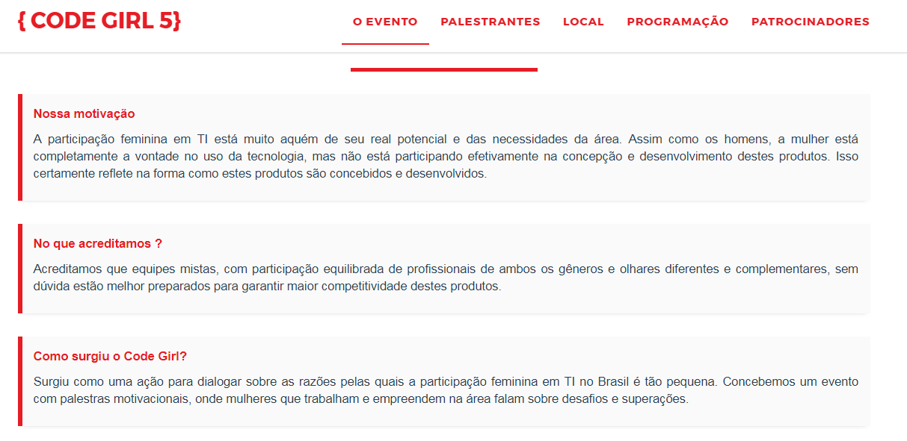
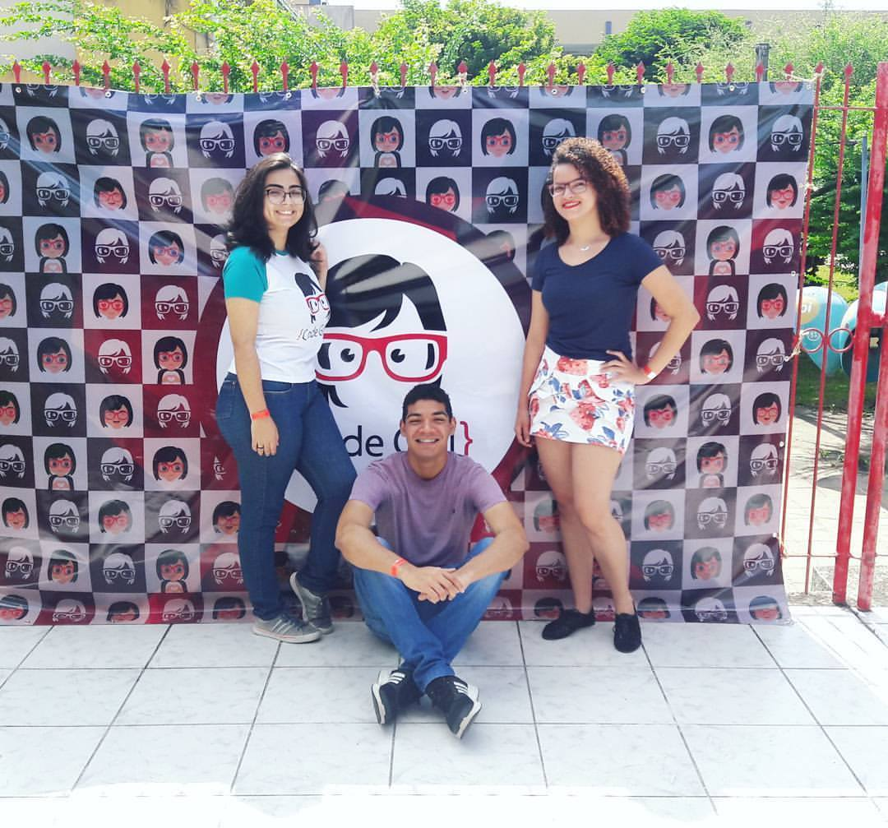

No dia 27 de outubro acontece, em Natal, a 5ª edição do Code Girl, um dos maiores eventos de tecnologia voltados para o público feminino (embora conte com a presença de homens). Já estive presente em duas edições anteriores e garanto que todas as edições são únicas. Contarei um pouco da minha experiência durante a 5ª edição.

Esse em pé? Sim, esse sou eu. (Foto da 3ª edição do CG)
Code Girl
O Code Girl é um evento realizado pelo projeto Programar Meu Futuro, que visa estimular a participação feminina no Mercado de TI. Através de palestras motivacionais, seu objetivo é remover o preconceito de que garotas não podem trabalhar na área e mostrar que as mulheres podem sim ir muito além do mundo da programação.
O que o Code Girl representa. (Imagem retirada do site do evento)
Fundadoras
Cláudia Ribeiro
Suzyanne Oliveira
Naya Rocha
“Nós precisamos empoderar as mulheres, mas ao lado dos homens, porque elas vão trabalhar com eles.“
A Quinta Edição
Comemorando seus 5 anos de existência, a edição deste ano apresentou uma abordagem diferente dos anos anteriores. Em outras edições, mulheres de tecnologia, de diferentes eixos, se apresentavam no palco e contavam suas experiências de trabalho, carreira e, as vezes, apresentavam conceitos um pouco mais técnicos da área. Tudo era feito com o intuito de motivar meninas e mulheres a permanecer em áreas tecnológicas.
Da esquerda para a direita, Bia, eu e Taciana, todos Técnicos em Informática. (Foto da 5ª edição do CG)
Este ano, nós, participantes, experimentamos uma pequena imersão dentro do universo de uma das maiores empresas tecnológicas do país: a ThoughtWorks. Quase todas as palestras foram feitas por membros da empresa e, durante o evento, eles fizeram um mini-recrutamento através de entrevistas com alguns candidatos.
As primeiras palestrantes do dia foram duas recrutadoras da ThoughtWorks que explicaram como funciona o processo de seleção da empresa. Fiquei impressionado ao descobrir que eles aplicam técnicas ágeis em todas as etapas do processo. Depois tivemos palestras sobre Mobile, React.js, DevOps e o depoimento de dois ex-estudantes do IFRN que viajaram para a Índia pela ThoughtWorks e, hoje, trabalham na empresa. Eu, particularmente, fiquei encantado com a cultura da ThoughtWorks e a maneira como eles valorizam os profissonais.
Pessoas não são recursos.
Todas as palestras foram transmitidas ao vivo e os vídeos estão disponíveis no YouTube. Vou colocar o link aqui caso você não tenha tido a oportunidade de estar lá.
Vídeos: | Parte 01 - ThoughtWorks e Depoimento | Parte 02 - Palestras Técnicas
Mulheres na Tecnologia
O Code Girl não é a única iniciativa que tem como objetivo incentivar mulheres a participarem de áreas tecnológicas. Dediquei esse espaço do Post para contar para vocês a história de outra pessoa que, atualmente, também trabalha com esse objetivo: Camila Achutti.
Camila sentiu na pele o que é sofrer preconceito na área de TI por ser mulher. Em uma sala de 50 pessoas, sendo 49 homens, no Instituto de Matemática e Estatística (IME) da USP, Camila chegou a ser ridicularizada, em seu primeiro dia de aula, por não entender como um algoritmo funcionava. Pouco tempo depois criou o blog Mulheres na Computação, espaço virtual que utilizava para narrar detalhes da sua experiência na faculdade sendo a única mulher de sua turma.
“Minha primeira aula foi no dia 8 de março, dia da mulher, e eu me lembro de ter olhado para os lados e só ter visto homens. Eu estava sozinha. Mais duas meninas se matricularam, mas uma pediu transferência para a FEA [Faculdade de Engenharia e Administração da USP] e a outra não chegou a assistir nenhuma aula.
Eu simplesmente achei que não pertencia a esse lugar.”
O blog, rapidamente, alcançou grandes proporções entre as estudantes de tecnologia no Brasil. Muitas relataram histórias semelhantes para Camila. Uma leitora afirmava que sua faculdade não possuia banheiro feminino. Outra relatava que, ao tentar se impor para fazer tarefas técnicas em trabalhos de grupo, era acusada de desequilibrada ou por “estar com TPM”. Uma terceira enviou a Camila o convite de formatura, com os dizeres: “Não fosse seu blog, eu não teria conseguido terminar a faculdade”.
Ao fim dos quatro anos do curso no IME, entre 50 alunos, só Camila e mais dois se formaram. Ela foi a oradora e, por indicação de um professor, ganhou a chance de estagiar na sede do Google, em Mountain View. Ao fim do estágio, a Google lhe fez uma proposta. Ela recusou e voltou ao Brasil, para trabalhar na inclusão de mulheres no mercado de tecnologia. Hoje, ela representa o Technovation, um grupo que incentiva meninas no colégio a se interessarem por programação e engenharia.

Camila Achutti palestrou na 2ª edição e fez uma videoconferência durante a 3ª.
Técnico em Informática e Graduando em Análise e Desenvolvimento de Sistemas, ambos pelo IFRN, David, além de programador, é músico. Toca violão, piano, flauta e escaleta. Adora acampar, viajar, ler e estuda psicologia como hobbie nas horas vagas.
Clique aqui para saber mais sobre mim.